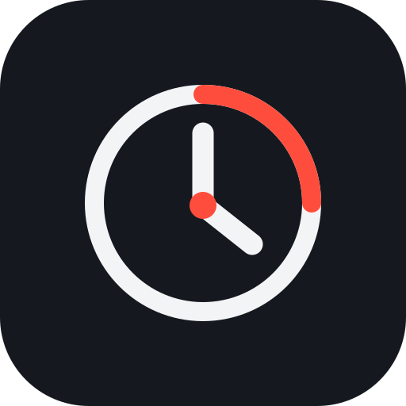
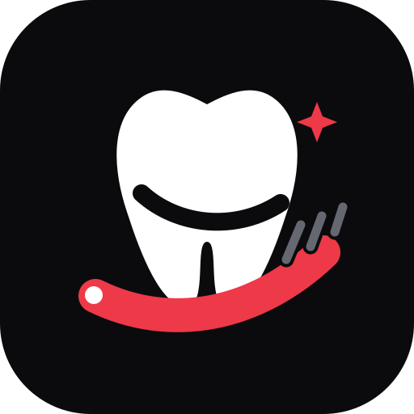
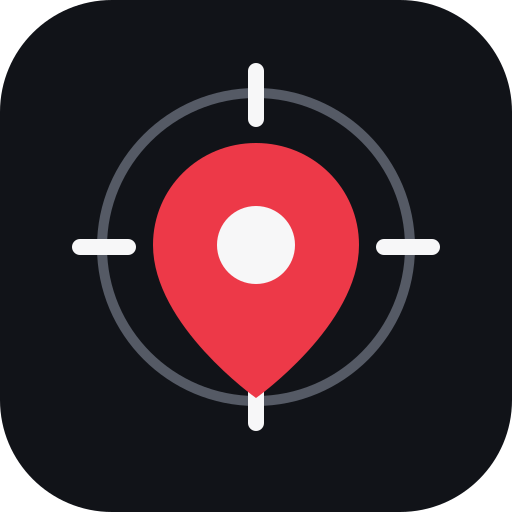
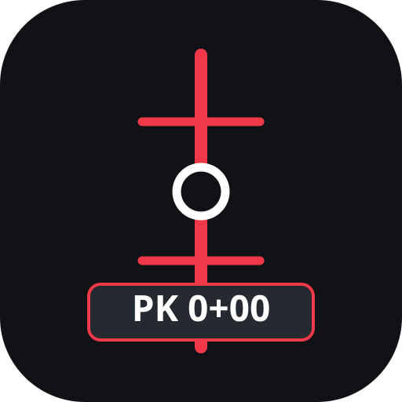

Interneto svetainės
Reprezentacinės ir asmeninės interneto svetainės, pritaikytos kompiuteriams ir telefonams.
WEB DEVELOPMENT · DIGITAL SOLUTIONS
Kuriu modernias interneto svetaines ir funkcionalius skaitmeninius sprendimus žmonėms bei verslui.
01 / APIE
TyliaiTPk – mano kuriamų interneto projektų ir skaitmeninių sprendimų erdvė. Vertinu paprastumą, aiškų dizainą ir funkcionalumą.
02 / PASLAUGOS
Reprezentacinės ir asmeninės interneto svetainės, pritaikytos kompiuteriams ir telefonams.
Nedideli internetiniai įrankiai ir individualūs sprendimai konkrečioms užduotims.
Esamų svetainių turinio, struktūros ir išvaizdos atnaujinimas.
03 / PROJEKTAI
Atidarykite projektų demonstracines versijas tiesiai naršyklėje.

WEB PROGRAMĖLĖ · DEMO
Mobiliesiems įrenginiams pritaikytas darbo laiko registravimo įrankis.

MOBILI PROGRAMĖLĖ · DEMO
Dantų valymo laikmatis ir kasdienio įpročio sekimas telefone.
FINANSŲ ĮRANKIS · DEMO
Interaktyvi pajamų ir išlaidų peržiūra su pavyzdiniais duomenimis.

VIETOS PROGRAMĖLĖ · DEMO
Vieta žemėlapyje, apytikslis adresas ir telefono duomenys. Pasirinkus galima gyvai bendrinti vietą su kitu žmogumi iki išjungimo.

GEODEZINĖ PROGRAMĖLĖ · DEMO
Vieta žemėlapyje, Civil 3D ašies importas, piketažas ir atstumas iki ašies.
04 / KONTAKTAI
Galime aptarti interneto svetainę ar kitą skaitmeninį sprendimą.
tyliaitpk@gmail.com